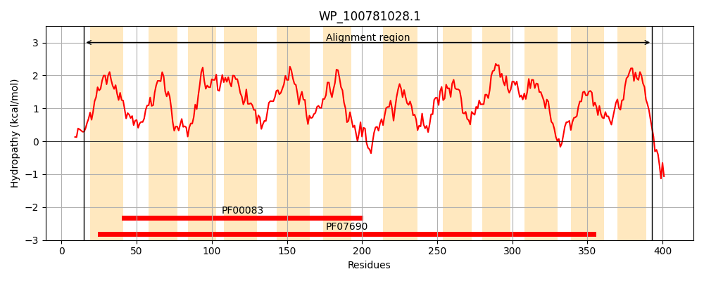
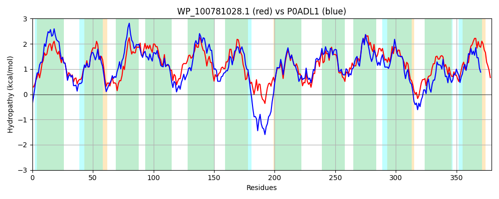

Hit Accession: P0ADL1
Hit TCID: 2.A.1.2.26
Hit Description: gnl|BL_ORD_ID|8755 gnl|TC-DB|P0ADL1|2.A.1.2.26 Purine ribonucleoside efflux pump nepI - Escherichia coli.
Mach Len: 379
e:0.000000
Query TMS Count : 12
Hit TMS Count: 12
TMS-Overlap Score: 12.450000
Predicted Substrates:CHEBI:8639;7H-purine, CHEBI:26399;purine ribonucleoside
BLAST Alignment:
Score: 940 , Bit scores: 366 bits, E-value: 5.7e-125, Alignment length: 379, Percentage identity: 49
Query: 15 KPAWRAVYALALGVFGLIVAEFLPASLLTPMASSLGVSEGMAGQAVTATALVALVTGLLIATATRNIDRRWVLMFFSVLQIVSSLMVAFADSLAFLLLGRLLLGIAIGGFWAMSTATAMRLVPAAHVPKALAIIFSAVSVATVVAAPLGSYLGELIGWRNVFILCAIPSLLALLWQLWVLPSMRPESVGTFSTLFRVLRRPGMLGGMLATILIFSGHFAFFTYLRPFLETVAQASVEGVSLILLGFGIANFIGTSVASYLLSRSLRLTLALVPLMMSVLALLMVTFGHLTMLDGLLVALWGFAFGLVPVAWSTWLATTVPDEAESAGGLLVASIQLAISAGAAGGGAVFDLHGASGVFTGSGLLLLSAMVIVFAAVRVK 393
+P W AV+++A V LI+ EFLP SLLTPMA LG+SEG+AGQ+VT TA VA+ L I + DRR+V++ F+VL +S L+V+FA+S + LL+GR LG+A+GGFWAMS + MRLVP VPKAL++IF AVS+A V+AAPLGS+LGELIGWRNVF A+ +L + W + LPS+ E FR+L+RPG++ GM+A + F+G FAFFTY+RP +A V+G++L+LL FGIA+FIGTS++S++L RS++L LA PL+++V AL++ +G ++ + +WG F LVPV WSTW+ ++ D+AE AG + VA IQLA + GAA GG D G + SG L+L ++V A V++K
Sbjct: 16 RPNWSAVFSVAFCVACLIIVEFLPVSLLTPMAQDLGISEGVAGQSVTVTAFVAMFASLFITQTIQATDRRYVVILFAVLLTLSCLLVSFANSFSLLLIGRACLGLALGGFWAMSASLTMRLVPPRTVPKALSVIFGAVSIALVIAAPLGSFLGELIGWRNVFNAAAVMGVLCIFWIIKSLPSLPGEPSHQKQNTFRLLQRPGVMAGMIAIFMSFAGQFAFFTYIRPVYMNLAGFGVDGLTLVLLSFGIASFIGTSLSSFILKRSVKLALAGAPLILAVSALVLTLWGSDKIVATGVAIIWGLTFALVPVGWSTWITRSLADQAEKAGSIQVAVIQLANTCGAAIGGYALDNIGLTSPLMLSGTLMLLTALLVTAKVKMK 394 | Protein Hydropathy Plots: |
|---|
|  |  |
Pairwise Alignment-Hydropathy Plot:
|
|---|
|  |